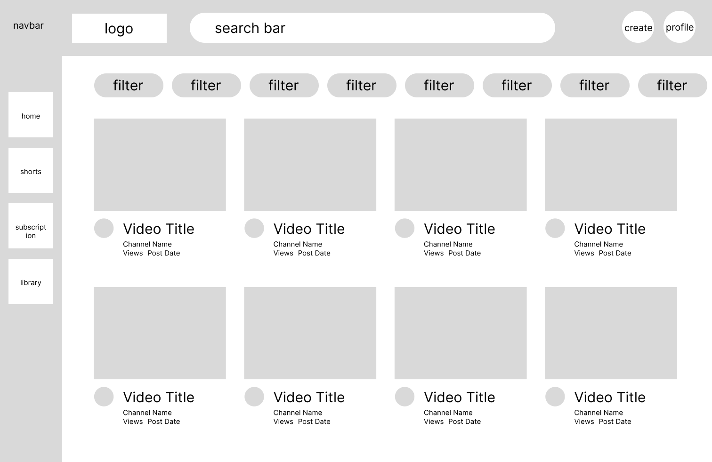
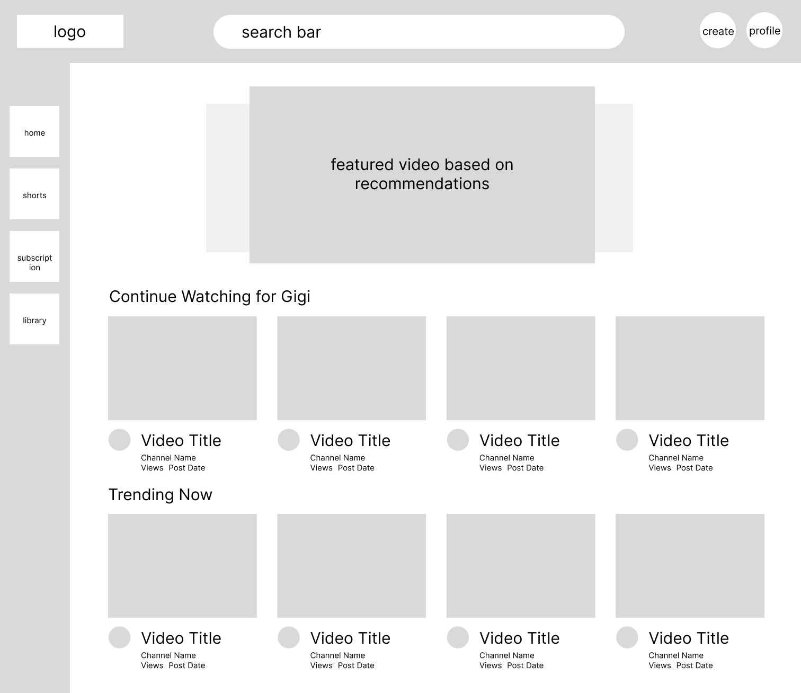

-
Using the favorite website you chose in homework 1, create a wireframe for one page of it using pen/paper, PowerPoint, or any your tool of choice. (use the 'img' tag!) Make sure to let us know what the name of your website is (Use the 'p' tag!)

-
Try to improve the website you've chosen, and create a redesigned wireframe of one page for the same website using the principles of visual hierarchy that you learned from the article.

-
What is the goal of the website? Who is it intended for? How does the design accomplish this? Write 2-3 sentences answering these questions. (Use the 'p' tag again!)
The goal of Youtube is to provide entertainment for its viewers and enable anyone to become content creators. In the current page's design, we can see that Youtube gives viewers a large variety of videos to choose from as well as filters. However, this makes the page looks quite clogged and as someone who is often very indecisive and easily overwhelmed by options, this design can be a little overwhelming.
-
Write 2-3 sentences about what problems your redesign addressed, and how it solved them.
My page redesign is very much inspired by Netflix since I find their UI to be the easiest to navigate through out of all entertainment platforms. On the top, I added featured videos so that the page seems more cleaned up and reduces the sense of clutteredness. I also added categories for each row of videos to keep organization, and finally I removed the filters since the categories can easily replace the use of them.
NOTE: Make sure to include the wireframe images in the website and don't just put it in your assets folder!
Your wireframes should look something like this: